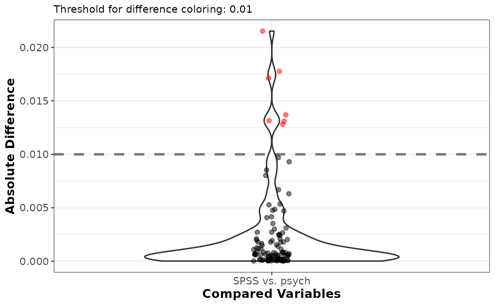

The function takes two objects of the same dimensions containing numeric information (loadings or communalities) and returns a list of class COMPARE containing summary information of the differences of the objects.
matrix, or vector. Loadings or communalities of a factor analysis output.
matrix, or vector. Loadings or communalities of another factor analysis output to compare to x.
character. Whether and how elements / columns should be reordered. If "congruence" (default), reordering is done according to Tuckers correspondence coefficient, if "names", objects according to their names, if "none", no reordering is done.
logical. Whether factor correspondences should be compared if a matrix is entered.
numeric. The threshold to classify a pattern coefficient as substantial. Default is .3.
numeric. Number of decimals to print in the output. Default is 4.
numeric. Number above which the mean and median should be printed in red (i.e., if .001 is used, the mean will be in red if it is larger than .001, otherwise it will be displayed in green.) Default is .001.
numeric. Number above which the min and max should be printed in red (i.e., if .001 is used, min and max will be in red if the max is larger than .001, otherwise it will be displayed in green. Default is .001). Note that the color of min also depends on max, that is min will be displayed in the same color as max.
numeric. Number above which the max decimals to round to where all corresponding elements of x and y are still equal are displayed in red (i.e., if 3 is used, the number will be in red if it is smaller than 3, otherwise it will be displayed in green). Default is 3.
logical. Whether the difference vector or matrix should be printed or not. Default is TRUE.
logical. Whether NAs should be removed in the mean, median, min, and max functions. Default is FALSE.
character. A vector of length two containing identifying labels for the two objects x and y that will be compared. These will be used as labels on the x-axis of the plot. Default is "x" and "y".
logical. If TRUE (default), a plot illustrating the differences will be shown.
numeric. Threshold above which to plot the absolute differences in red. Default is .001.
A list of class COMPARE containing summary statistics on the differences of x and y.
The vector or matrix containing the differences between x and y.
The mean absolute difference between x and y.
The median absolute difference between x and y.
The minimum absolute difference between x and y.
The maximum absolute difference between x and y.
The maximum number of decimals to which a comparison makes sense. For example, if x contains only values up to the third decimals, and y is a normal double, max_dec will be three.
The maximal number of decimals to which all elements of x and y are equal.
The number of differing variable-to-factor correspondences between x and y, when only the highest loading is considered.
The number of differing variable-to-factor correspondences
between x and y when all loadings >= thresh are considered.
The root mean squared distance (RMSE) between x and y.
List of the settings used.
# A type SPSS EFA to mimick the SPSS implementation
EFA_SPSS_6 <- EFA(test_models$case_11b$cormat, n_factors = 6, type = "SPSS")
#> Warning: Reached maximum number of iterations without convergence. Results may not be interpretable.
# A type psych EFA to mimick the psych::fa() implementation
EFA_psych_6 <- EFA(test_models$case_11b$cormat, n_factors = 6, type = "psych")
# compare the two
COMPARE(EFA_SPSS_6$unrot_loadings, EFA_psych_6$unrot_loadings,
x_labels = c("SPSS", "psych"))
#> Mean [min, max] absolute difference: 0.0025 [ 0.0000, 0.0215]
#> Median absolute difference: 0.0008
#> Max decimals where all numbers are equal: 0
#> Minimum number of decimals provided: 17
#>
#> F1 F2 F3 F4 F5 F6
#> V1 0.0000 -0.0001 -0.0003 -0.0053 -0.0015 -0.0012
#> V2 0.0001 0.0005 0.0008 -0.0080 -0.0048 -0.0019
#> V3 -0.0005 -0.0002 -0.0015 -0.0097 -0.0131 0.0000
#> V4 0.0001 -0.0001 -0.0011 0.0049 0.0128 0.0020
#> V5 0.0001 -0.0001 -0.0007 0.0027 0.0131 0.0007
#> V6 -0.0008 -0.0030 -0.0053 -0.0178 0.0215 0.0008
#> V7 0.0000 -0.0005 -0.0009 -0.0047 0.0041 -0.0001
#> V8 -0.0000 0.0002 -0.0000 -0.0085 -0.0027 -0.0018
#> V9 0.0002 0.0005 0.0006 -0.0067 -0.0063 -0.0002
#> V10 0.0000 -0.0002 -0.0007 0.0005 0.0008 0.0006
#> V11 0.0003 0.0007 -0.0012 0.0025 -0.0024 -0.0006
#> V12 -0.0004 -0.0018 0.0020 -0.0014 -0.0021 -0.0001
#> V13 0.0001 0.0018 0.0018 0.0137 -0.0031 0.0002
#> V14 0.0000 0.0006 0.0004 0.0093 0.0035 0.0001
#> V15 -0.0001 0.0011 0.0006 0.0171 0.0025 0.0004
#> V16 0.0001 0.0002 0.0011 0.0042 -0.0027 0.0001
#> V17 0.0001 -0.0000 0.0008 0.0021 0.0008 0.0006
#> V18 0.0001 0.0001 0.0007 0.0003 0.0016 0.0006
#> Warning: `aes_string()` was deprecated in ggplot2 3.0.0.
#> ℹ Please use tidy evaluation idioms with `aes()`.
#> ℹ See also `vignette("ggplot2-in-packages")` for more information.
#> ℹ The deprecated feature was likely used in the EFAtools package.
#> Please report the issue at <https://github.com/mdsteiner/EFAtools/issues>.
#> Warning: Using `size` aesthetic for lines was deprecated in ggplot2 3.4.0.
#> ℹ Please use `linewidth` instead.
#> ℹ The deprecated feature was likely used in the EFAtools package.
#> Please report the issue at <https://github.com/mdsteiner/EFAtools/issues>.
